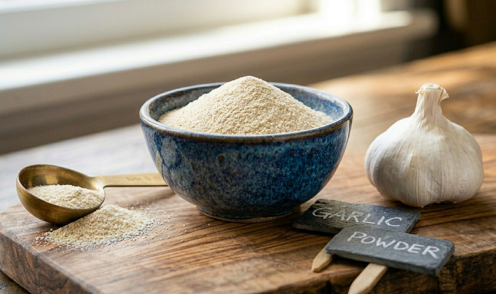

Grade A — Premium Best Grade Dehydrated Garlic Powder
Our ultra-premium grade, processed exclusively from select first-pick garlic cloves. This variant features a brilliant creamy white color profile, unmatched sensory pungency, and the lowest moisture levels achievable. Engineered for high-end retail spice packaging and gourmet formulations where visual and flavor purity cannot be compromised.
Visual Profile: Bright Creamy White
Moisture Cap: < 4.0% Max
Standard MOQ: 500 kg Matrix
Purity Metrics: 100% Zero Additives
Primary Industrial Target Uses:
- Premium retail seasoning blends, artisanal spice rubs, and top-tier culinary coatings.
- Gourmet sauces, organic dressings, and dry snack seasonings demanding white uniformity.
- Pharmaceutical and premium supplement base configurations.